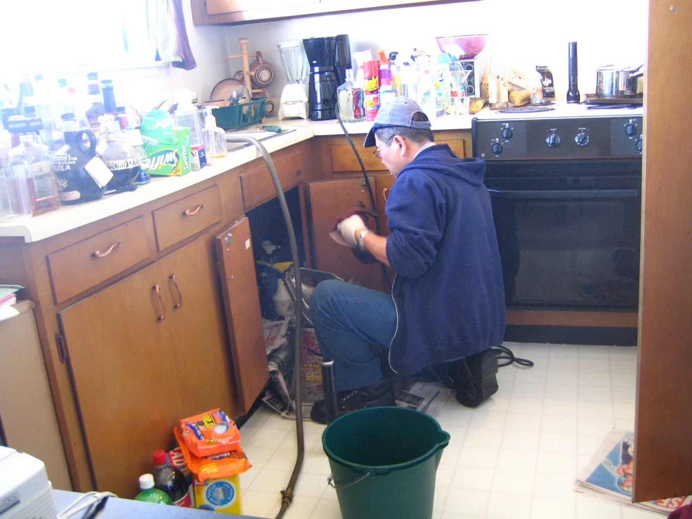
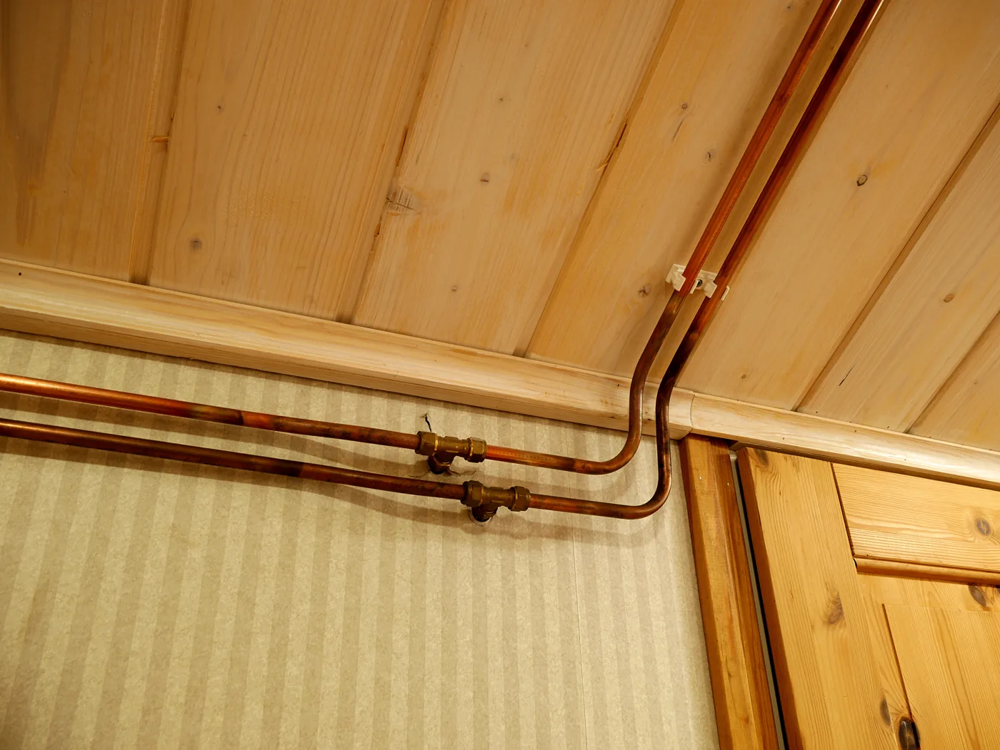
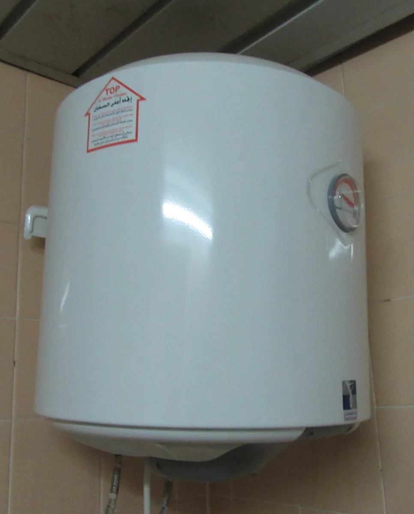
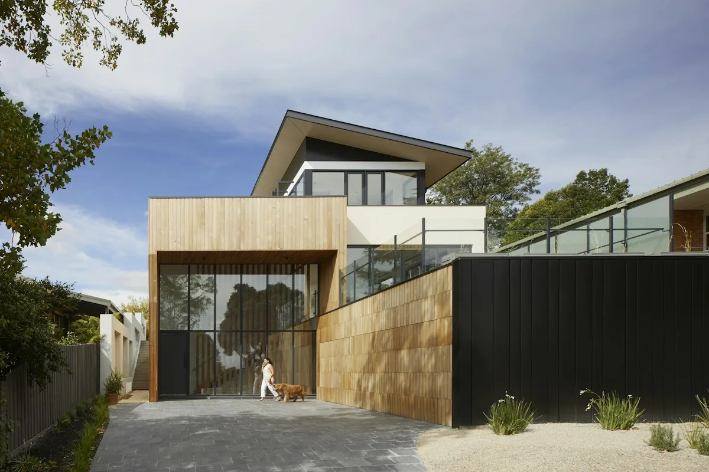
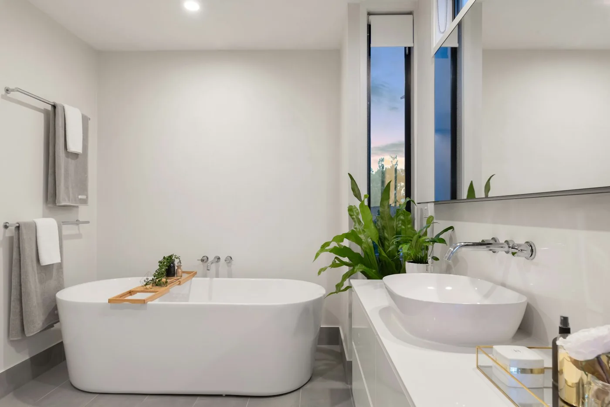
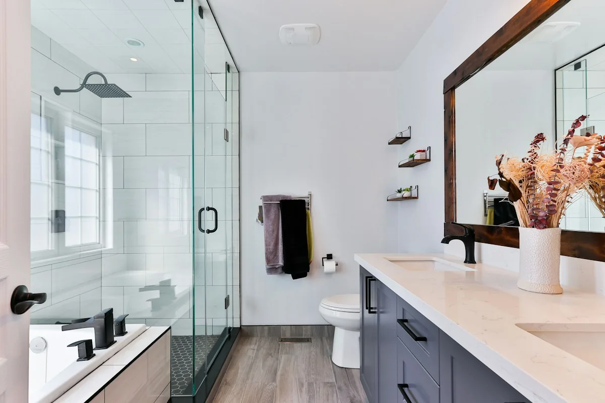

Good work starts with the right conversation.
Repairs, installations and improvements for the plumbing you depend on every day. Tell us what is happening, and we can discuss the next step.

Concept / Placeholder ImagePlumbing Repairs
A small leak can interrupt a whole day. Plumbing repairs start with understanding where the water is coming from, when the problem appears and which fixtures are affected. We help with everyday leaks, toilets and household plumbing connections.
When to call
Look for water under cabinets, a faucet that keeps dripping, damp finishes or a toilet that refills on its own. Tell us what you have noticed and whether you can safely stop using the affected fixture. Call to discuss the issue and confirm the next step before making repairs yourself.
Call (213) 424-8544
Concept / Placeholder ImageDrain & Sewer
A sink that drains slowly is different from several fixtures backing up together. Drain and sewer service addresses blockages and recurring drainage problems, with attention to how the fixtures connect. Repeated clogs are a reason to investigate the cause rather than keep treating the symptom.
When to call
Call when drains gurgle, water returns after clearing a clog or more than one fixture is affected. Stop using backed-up fixtures and avoid adding drain chemicals. Explain what drains are involved and mention any products already used so the work can be planned appropriately.
Call (213) 424-8544
Concept / Placeholder ImageWater Heaters
Hot water problems can involve the heater, demand in the home or the plumbing connected to it. Our existing service offering includes water heater repair, replacement and installation. The right conversation starts with the type of unit, its symptoms and the space available.
When to call
Notice shorter showers, unusual noises, visible water near the unit or inconsistent temperatures? Have the model number ready if you can read it safely. Call to discuss repair versus replacement. Leave gas, electrical and pressure-relief components to an appropriate professional.
Call (213) 424-8544
Concept / Placeholder ImageFixture Installation
New fixtures can make daily routines easier without changing an entire room. Fixture installation covers faucets, sinks, toilets and related plumbing connections. Compatibility matters as much as appearance: mounting holes, supply connections and drain position all influence what will fit.
When to call
Before buying, keep the product specifications and take a photo of the current setup. Call if a fixture is worn, leaking or part of a planned update. Share the model you are considering so access and connection requirements can be discussed before installation.
Call (213) 424-8544
Concept / Placeholder ImageBathroom Plumbing
A bathroom update depends on the work behind the walls as well as the fixtures you see. We help with shower, tub and bathroom plumbing upgrades. A trim change may be straightforward, while moving a valve or drain can involve a wider scope.
When to call
Call when a shower handle is difficult to operate, temperatures are inconsistent or you are planning a fixture update. Share the current layout, product details and what you want to change. Discuss plumbing access and coordination with any other trades before finishing surfaces.
Call (213) 424-8544
Concept / Placeholder ImageNew Plumbing
New plumbing work starts with the intended use of the space. Our existing service list includes plumbing lines and installations for new projects. Discuss fixture locations, supply needs, drainage and access early, before cabinetry and finishes make changes harder.
When to call
Bring a simple layout, the project address and any fixture specifications. Call before purchasing equipment or closing walls. The conversation can clarify the plumbing scope, availability and which project details still need to be confirmed with the people involved.
Call (213) 424-8544Tell us what you need.
Tell us what is happening and where you need help. For current availability or an urgent issue, please call.
Or call (213) 424-8544